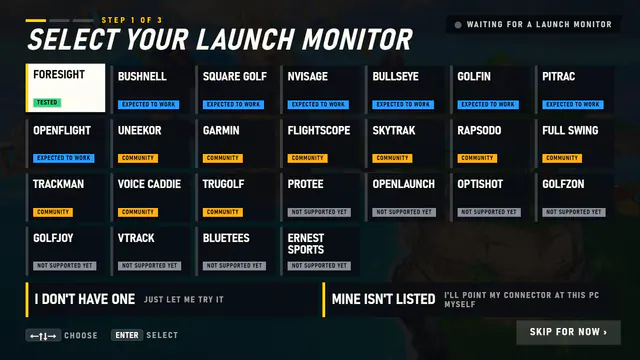

Install
Get it running
Sim Clash is a Windows desktop game. Most people want the installer; if you would rather see exactly what you are running, start it from source. Both are free, and neither asks for an account.
The Windows installer
Download the installer. It is the file named
Sim-Clash-Setup-version.exeon the project's Releases page on GitHub. The Download buttons on this site go to the newest one.Run it. Windows will most likely show a blue "Windows protected your PC" box first. That is expected: see the SmartScreen warning below for what it means and how to continue.
That is the whole install. One click: it installs for your Windows user only, so there is no administrator prompt. It adds a Start Menu entry and a desktop shortcut called Sim Clash, and starts the game when it is done.
Connect a launch monitor, or skip that for now and play with test swings. The game's own wizard walks you through it; the connection guide has the same steps to read first.
Download for Windows All releases, with checksums
Where it keeps things. The game's own data (players, coins, settings) lives in your user profile under %APPDATA%\Sim Clash, with a log at %APPDATA%\Sim Clash\logs\game.log. Nothing is written next to the program. It installs beside Open-Birdie without touching it, but the two cannot run at the same time: they use the same ports.
The game opens full screen on your main display. F11 or Alt+Enter switches between full screen and a window, and it remembers which you left it in. It works offline and makes no network requests of its own: the stages, the skies and the sound are installed with it.
The SmartScreen warning
The installer is not code-signed yet. When you run it, Microsoft Defender SmartScreen says "Windows protected your PC" and names the publisher as unknown.
In the blue box, click More info.
Click Run anyway. Windows asks once per downloaded file.
Why it is unsigned
Signing a Windows program takes a certificate that is paid for every year, and SmartScreen still warns about a newly signed program until enough people have downloaded it. Sim Clash is a free hobby project with no company behind it, so there is no certificate. The warning says "Windows does not know this publisher". It does not say anything was found in the file.
How to trust it anyway
- Download only from the project's own Releases page, never from a re-upload.
- Each release lists the installer's SHA-256 checksum. To check your download, run
Get-FileHash .\Sim-Clash-Setup-version.exe -Algorithm SHA256in PowerShell and compare. - The whole source is public. If you would rather not run a prebuilt program at all, run it from source: it is the same game.
No "Run anyway"? On a Windows 11 PC with Smart App Control switched on, unsigned apps are blocked outright, with no way past the box. A PC managed by an employer or a school may do the same. Running from source is the way there too.
The firewall question
The first time the game runs, Windows Firewall asks whether to allow it. It asks because the game listens for your launch monitor on TCP port 921.
- Your launch monitor's connector runs on this same PC (the usual case): you can refuse. Local connections still work.
- The connector runs on another device: allow private networks only.
The built-in Foresight bridge uses a second port, 9050, on this PC only. Windows does not normally ask about that one.
The first start
The game opens on its title screen. Any key, a click or a real swing moves on. The first time, a connection wizard comes next: it asks which launch monitor you have and shows the steps for that one, with a live status light. Follow it, or press SKIP FOR NOW; it is always under SETTINGS > LAUNCH MONITOR > SET UP MY LAUNCH MONITOR.

Then the main menu: VERSUS, SOLO, PRACTICE, PLAYERS, SETTINGS. The shortest way into a match is three presses: any key, Enter, Enter. How to play has the rest.
Run it from source
You need Node.js 22 or newer (the version the project's package.json asks for) and Git.
git clone (the repository address, from its GitHub page)
cd sim-clash
npm install
npm startnpm install fetches the dependencies (including Electron, so it takes a few minutes the first time). npm start builds the stages, which takes a few seconds, and opens the game full screen. On Windows you can double-click Sim Clash.bat instead of typing the last line.
PowerShell note. Run the four lines one at a time. Older Windows PowerShell does not understand && between commands.
Other ways to start it
| Command | What it does |
|---|---|
npm start | The desktop game. |
npm run start:server | The game's server with no window: open http://localhost:8222 in a browser on the same PC. |
npm test | The test suite. |
npm run dist | Builds the Windows installer yourself, into dist/, and checks it. |
Want to change the game rather than just run it? Make it yours is the page for that.
Settings for tinkerers
None of these are needed for a normal install. They are environment variables read when the game starts.
| Variable | Default | Meaning |
|---|---|---|
BIRDIE_OC_PORT | 921 | The port the game listens on for launch-monitor shots (GSPro Open Connect). |
BIRDIE_PORT | 8222 | The port of the game's own local web server. |
BIRDIE_HOST | 127.0.0.1 | Who can reach that web server. The default is this PC only. 0.0.0.0 lets a tablet or phone on your network mirror the game; the server has no password, so only do that on a network you trust. |
BIRDIE_SPEED_SCALE | 1 | Multiplies incoming ball speed. Set 2.23694 if your launch monitor's connector reports metres per second (shots play about 2.2 times too short otherwise). |
BIRDIE_FORESIGHT | saved setting | auto, on or off: overrides the Foresight bridge's switch for this run (see Connect). |
BIRDIE_GSPCONNECT_DIR | C:\GSProV1\Core\GSPC | The Foresight connector's folder, when GSPro is installed somewhere else. The same thing can be set in SETTINGS > LAUNCH MONITOR. |
BIRDIE_NO_WATCH | unset | Set to 1 to stop the desktop game starting its bundled Uneekor VIEW watcher (see Connect). |
BIRDIE_PRODUCT | simclash | open-birdie starts the original simulator that Sim Clash is built on, real courses and all, instead of the game. |
The names start with BIRDIE because the engine underneath is Open-Birdie.
Updating and removing
- Updating: the game does not update itself. Download the newer installer from Releases and run it; it installs over the old version and keeps your players, coins and settings.
- From source:
git pull, thennpm installandnpm startagain. - Removing: Windows Settings > Apps > Installed apps > Sim Clash > Uninstall. Your players, coins and settings are left in
%APPDATA%\Sim Clash; delete that folder too if you want them gone.